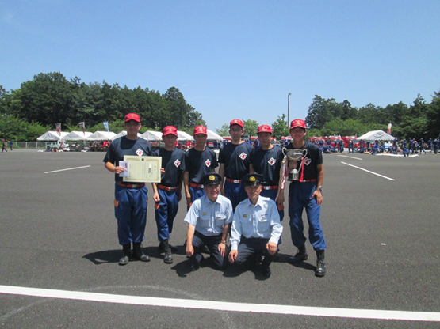

日 時：平成３０年７月１日（日）午前８時００分から正午ごろまで（雨天決行）
会 場：飯能日高消防署屋外訓練場（駐車場は飯能看護専門学校駐車場をご利用ください。会場までバスで送迎します。）
お問合せ：飯能市役所危機管理室消防団担当
電話 （代表）０４２－９７３－２１１１（内線６２３）
消防操法の種別 第１部 小型ポンプ操法（７隊）／第２部 ポンプ車操法（６隊）
◆出場順位
小型ポンプの部（７隊）
１ 飯能消防団第４分団１部１班
２ 飯能消防団第５分団２部
３ 飯能消防団第１１分団３部
４ 日高市消防団 団本部
５ 飯能消防団第１１分団１部
６ 飯能消防団第１０分団２部２班
７ 飯能消防団第９分団２部
ポンプ車の部（６隊）
１ 飯能消防団第１１分団
２ 飯能消防団第１０分団
３ 日高市消防団第４分団
４ 日高市消防団第２分団
５ 日高市消防団第３分団
６ 飯能消防団第９分団
第２８回 埼玉県消防協会埼玉西部支部消防操法大会成績

★ポンプ車の部 優勝 日高市消防団第３分団
★小型ポンプの部 優勝 飯能消防団第５分団２部
●ポンプ車の部
優 勝 日高市消防団第３分団
準優勝 日高市消防団第２分団
第三位 飯能消防団第９分団
第四位 飯能消防団第１１分団
第五位 日高市消防団第４分団
第六位 飯能消防団第１０分団
●最優秀選手賞
指揮者 飯能消防団第９分団 加藤 英治
１番員 日高市消防団第３分団 神田 賢人
２番員 日高市消防団第３分団 高橋 裕矢
３番員 日高市消防団第３分団 椎橋 義昭
４番員 日高市消防団第３分団 猪俣 浩慎
●小型ポンプの部
優 勝 飯能消防団第５分団２部
準優勝 飯能消防団第１１分団３部
第三位 飯能消防団第４分団１部１班
第四位 飯能消防団第１０分団２部２班
第五位 日高市消防団団本部
第六位 飯能消防団第９分団２部
第七位 飯能消防団第１１分団１部
最優秀選手賞
指揮者 飯能消防団第４分団１部１班 杉山 覚
１番員 日高市消防団団本部 長岡 篤史
２番員 飯能消防団第９分団２部 中村 崇
３番員 飯能消防団第１１分団１部 眞鍋 謙太
※なお、ポンプ車の部で優勝した日高市消防団第３分団は、来る８月４日（土）に埼玉県消防学校（鴻巣市）にて開催される第３０回埼玉県消防操法大会に出場します。